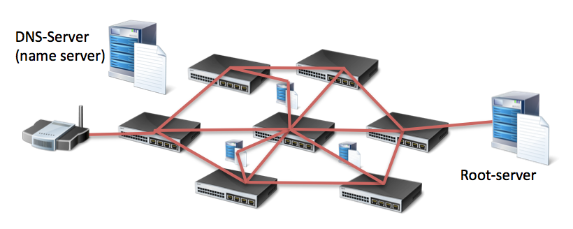
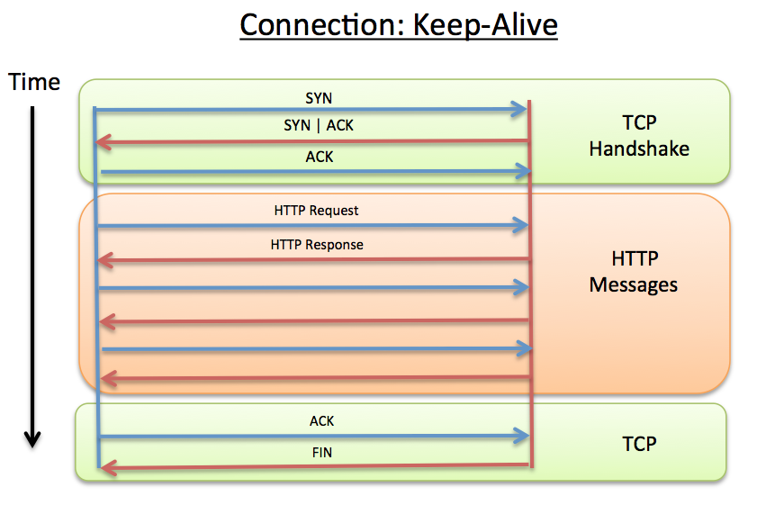
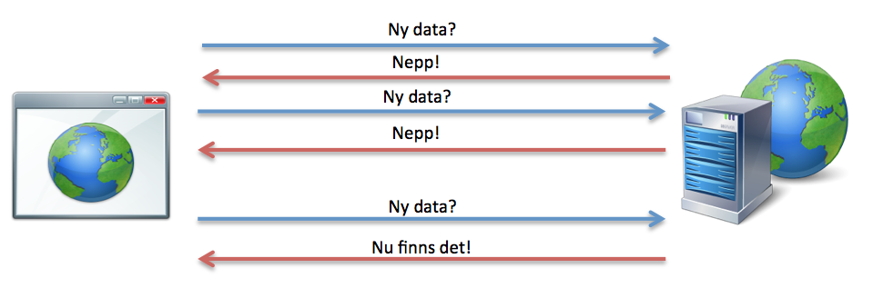
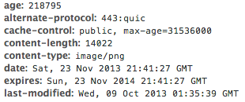
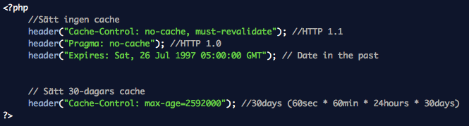

Webbteknik II, 1DV449
Linnéuniversitetet, Ht 2013
HTTP
 Denna presentation är licensierat under en
Creative Commons Erkännande 3.0 Unported Licens.
Denna presentation är licensierat under en
Creative Commons Erkännande 3.0 Unported Licens.
Denna presentation är licensierat under en
Creative Commons Erkännande 3.0 Unported Licens.

Foto cc by: http://www.flickr.com/photos/knightfoundation/
HTTP needs a reliable connection, standard port 80 - https 443
HTTP är textbased
HTTP är mer än bara filöverföring


Protokollstack, många protokoll (samling regler)
Grunden för all kommunikation på nätet
Byta ut olika nivåer
Paketbaserad
Ta olika vägar för att komma fram
TCP/IP är grunden för all kommunikation över Internet. Det är en så kallad protokollstack
och innehåller mängder av olika protokoll för olika typer av tillämpningar.
De olika nivåerna i stacken är separerade från varandra så att man enkelt kan bygga på del
och del. TCP/IP delar upp all trafik i mindre paket för att enklare kunna skicka
dessa över Internet. Varje lager i TCP/IP-modellen lägger på sin information på paketet
och tar också hand om det på andra sidan.

Internet består av miljontals servrar, routrar osv
Trafiken kan ta olika vägar - Beroende på tillgänglighet, prestanda m.m. Det var själva
tanken med Internet. Går en väg ner ska trafiken alltid kunna ta en annan.
Applikationer på internet - FTP, E-post, BitTorrent, Webben
Vi gillar domännamn
www.lnu.se
Datorer gillar IP-adresser
194.173.221.1
2001:0db8:85a3:0000:0000:8a2e:0370:7334
På något sätt måste det finnas ett system för möjligheten att översätta IPnummer till domännamn och vice versa...

Översätt IP till domnnamn och vice versa
DNS systemet är centralstyrt system och högst upp i hierarkin finns 13 stycken root servrar.
De flesta uppslag vi gör hamnar dock på en betydligt närmare DNS-server än så då det finns
massor av namnservrar som kopierar ner listor med uppslag så att man kan minska
anropens längd. Du har även en DNS cache i din lokala dator, både i operativsystemet
och i webbläsaren.
DNS-servrarna kommunicerar med varandra internt för att hela tiden försöka ha den senaste
listan. Om du någon gång pekat om en server och uppdaterats dess DNS register vet du att
det kan ta en stund innan DNS:en har pekats om, anledning är just att det finns en viss
fördröjning innan all information spridits.

Internets routrar och IP-protokollet
När vi vet IP-numret till den server vi ska ansluta till kommer
IP-protokollet och alla miljontals routrar som finns på nätet väl till
plats. En router känner till många andra routrar som ligger ute på nätet
och kan med hjälp av smarta algoritmer och en specifik routingtabell ta reda på hur
paketen ska skickas vidare för att på bästa sätt hamna hor mottagaren.
Vad händer med ett paket som försöks skickas till endress som ingen svarar på?
TTL (tim-to-Live)

TCP är ett transportprotokoll vars uppgift är att se till att
alla paket verkligen kommer fram. TCP ansvarar också för anslutningen till
servern vi vill prata med. Man brukar tala om att man ansluter på olika portar
En webbserver lyssnar (som standard) på portarna (80 och 443 - https)
För varje anslutning till en server genomför TCP en så kallad handskakning
(3-way handshake). Klienten skickar en anslutningsförfrågan till servern, servern
svarar med ett OK (ACK) och ett synkroniseringsnummber och klienten skickar tillbaka
ett OK och anslutningen är nu upprättad.
UDP är ett annat transportprotokoll. Det är snabbare men har ingen kontroll
på att allt kommer fram. UDP brukar användas t.ex. vid videoströmmar där man
hellre tar en snabb koppling än att man tappar någon frame då och då.

HTTP är det vi ska gå lite djupare in i denna kurs och titta på mer i detalj vad som finns i det protokollet och vad som är viktigt för oss webbutvecklare.

Tips! Undvik onödiga HTTP-requests!
Detta gäller för en HTML-sida, en bild osv. En översiktlig del. Non-persistant (old way) prestanda: undvik onödiga requests Image maps, CSS Sprites, antal script och stilmallar
Hur kan det funka så bra!?!
http://www.w3.org/Protocols/rfc2616/rfc2616.html

Foto cc by Macco: http://www.flickr.com/photos/mako_side_b/

Foto cc by Tom Magliery: http://www.flickr.com/photos/mag3737/

| GET | Hämta en resurs (via URL), "read-only" |
| POST | Posta data (formulär). Skickar data från klient till server |
| HEAD | Hämta endast HTTP headern - ej ev. dokument |
| PUT | Ladda upp utpekad resurs |
| DELETE | Ta bort utpekad resurs |
| TRACE | Skicka tillbaka förfrågan precis som den kom (upptäcka ändringar på vägen) |
| OPTIONS | Får tillbaka en lista med vilka HTTP-kommandon som stöds |
| CONNECT | Används vid SSL-tunnlar |
GET och POST vanligast (betraktas som säkra)
Ofta inte stöd för andra (många tolkas som GET)
REST

Förstora bilden?
Hur många request tror du görs
453 requests! Hur fungerar det med request/response




Pull/Poll-tekniker, AJAX-polling
Smartare med längre och längre requeststider m.m. Problem med HTTP vs realtid
Flash, Java Applet
Forever frame
(Ajax) Polling
Long polling
XMLHttpRequest Streaming
Web Sockets - Lösning på TCP-nivå
Server-Sent Events
Dold iframe med en sida som servern skickar ut data (i form av javascript)
till webbläsaren när uppdateringar finns.
Servern använder "chunked encoding" så sidan i iframen fylls på efter
hand med script som anropar "riktiga" sidan via en callback
http://www.javaworld.com/javaworld/jw-03-2008/jw-03-asynchhttp.html?page=6
IE måste br-tagg läggas till Safari minst 1KB, Ingen felhantering.
En request görs men servern svarar endast när ny data finns
Simulerar att man servern pushar ut meddelanden

Problem att man kan bli liggande med många öppna anslutningar
Som long polling men du använder data så fort den kommer (chuncked)

Dåligt stöd i vissa webbläsare
I denna föreläsning ska vi koncentrera oss på vissa av dessa
Redirects

Mindre filer, mindre nätverkstrafik, snabbare sidor?
Vanligast är gzip (GNU), andra är t.ex. deflate
HTML, XML, JSON-dokument, Script, CSS...
Komprimera ej bilder, PDF och andra redan komprimerade resurser
Tips! Testa alltid prestandan!
Snabbhet vs. storlek
Compression - Hur gör jag?
Konfigureras oftas på webbservern
I Apache görs detta i .htaccess i modulen mod_deflate

Kan styras i PHP-kod via ob_gzhandler
Finns en mod_gzip, men är lit eäldre och bökigare
HTTP och cachning!
Ett sätt att spara kopior av en resurs
på en plats närmare den som efter frågar den

Bilder, script, css, statiska dokument
Spara kompior av ett reponse för att snabbare och effektivare presenter data vid en förfrågan Snabbare svar, mindre trafik statiska sidor vs. dynamiska snabbare och minska trafik Stale - Data som inte är uppdaterad (ej dynamiska sidor) Fräsh data

Content Delivery Network - En server nära dig!

Content Delivery Network

Fresh - Lita på att serverns response är giltigt
Stale - Cache:at response behöver uppdateras
Age? Hitta en bild med alla?
Expires
Kontrollerar fräschheten hos ett response mot ett HTTP datum
Om tiden gått ut görs en kontroll mot servern om nyare data finns

HTTP Date - Utgår från GMT Stort stöd Bilder och resuser som får tid långt framåt - Byt filnamn BILD Klockan - Syncproblem Lätt att glömma att man satt en tid långt fram
Cache-Control
Vanligt att man använder samtidigt som Expires.
Cache-Control prioriteras.
max-age - Antal sekunder som innehållet anses giltigt
public - Tillåts cache:as av alla
private - Tillåts endast cache-ning privat - webbläsare
no-cache - Kontrollera med servern för att få släppa cachat data
no-store - Ingen cache alls!
must-revalidate - Måste följa cache-reglerna ovan (HTTP finns specialfall)

Introducerades med HTTP 1.1 Pragma - Stöds inte av de flesta cache
ETag - Entity Tag
Unika identifierare sätts på servern för enklare(?) validering

If-None-Match - Validerar på servern ifall id:t har uppdaterats
Problem vid web frms osv.
Cache - i webbservern
De flesta webbservrar har redan cachning påslagen för statiska resurser.
Kan dock ställas om i konfigurationsfiler eller verktyg.
Sätta på filnivå, filändelsenivå o.s.v.
mod_expires, modul till Apache

Problem vid web frms osv.
Cache - PHP
Resurser som skapats av PHP bör man vara lite försiktid med att cache:a

Problem vid web frms osv.
Tips!
Sätt lång cachetid på resurser som inte uppdateras ofta (bilder, css, script)
Om en fil som cachas ändras. Uppdatera dess filnamn på servern.
När du uppdaterar din site - flytta bara de filer som ska uppdateras
HTTPS är endast för sidor som behövs vara krypterade.
Skriv till statiska filer, slippa DB, enklare att cache:a.
Använd inte POST i onödan - Den förfrågan cache:as inte
Testa din webbplats noga! Hur är cachningen satt! Vad kan bli bättre?
Studera välbesökta webbplatser!
När du uppdaterar din site - flytta bara de filer som uppdateras (ändrar inga Last-Modified) HTTPS är endast för sidor som behövs vara säkra. Sämre prestanda och noll cache.